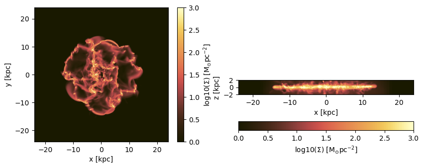
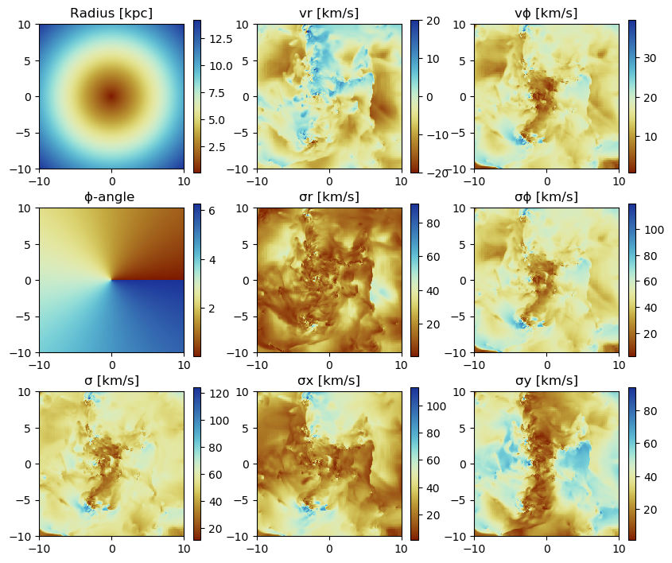

6. Hydro: Projections
Load The Data
using Mera
info = getinfo(400, "../../testing/simulations/manu_sim_sf_L14");
gas = gethydro(info, lmax=10, smallr=1e-5);┌ Info: Precompiling Mera [02f895e8-fdb1-4346-8fe6-c721699f5126]
└ @ Base loading.jl:1273
*__ __ _______ ______ _______
| |_| | | _ | | _ |
| | ___| | || | |_| |
| | |___| |_||_| |
| | ___| __ | |
| ||_|| | |___| | | | _ |
|_| |_|_______|___| |_|__| |__|
[Mera]: 2020-02-18T22:27:12.257
Code: RAMSES
output [400] summary:
mtime: 2018-09-05T09:51:55.041
ctime: 2019-11-01T17:35:21.051
=======================================================
simulation time: 594.98 [Myr]
boxlen: 48.0 [kpc]
ncpu: 2048
ndim: 3
-------------------------------------------------------
amr: true
level(s): 6 - 14 --> cellsize(s): 750.0 [pc] - 2.93 [pc]
-------------------------------------------------------
hydro: true
hydro-variables: 7 --> (:rho, :vx, :vy, :vz, :p, :var6, :var7)
hydro-descriptor: (:density, :velocity_x, :velocity_y, :velocity_z, :thermal_pressure, :passive_scalar_1, :passive_scalar_2)
γ: 1.6667
-------------------------------------------------------
gravity: true
gravity-variables: (:epot, :ax, :ay, :az)
-------------------------------------------------------
particles: true
- Npart: 5.091500e+05
- Nstars: 5.066030e+05
- Ndm: 2.547000e+03
particle variables: (:vx, :vy, :vz, :mass, :birth)
-------------------------------------------------------
clumps: true
clump-variables: (:index, :lev, :parent, :ncell, :peak_x, :peak_y, :peak_z, Symbol("rho-"), Symbol("rho+"), :rho_av, :mass_cl, :relevance)
-------------------------------------------------------
namelist-file: false
timer-file: false
compilation-file: true
makefile: true
patchfile: true
=======================================================
[Mera]: Get hydro data: 2020-02-18T22:27:49.16
Key vars=(:level, :cx, :cy, :cz)
Using var(s)=(1, 2, 3, 4, 5, 6, 7) = (:rho, :vx, :vy, :vz, :p, :var6, :var7)
domain:
xmin::xmax: 0.0 :: 1.0 ==> 0.0 [kpc] :: 48.0 [kpc]
ymin::ymax: 0.0 :: 1.0 ==> 0.0 [kpc] :: 48.0 [kpc]
zmin::zmax: 0.0 :: 1.0 ==> 0.0 [kpc] :: 48.0 [kpc]
Reading data...
100%|███████████████████████████████████████████████████| Time: 0:03:04
Memory used for data table :409.5426664352417 MB
-------------------------------------------------------gas.dataTable with 4879946 rows, 11 columns:
Columns:
# colname type
────────────────────
1 level Int64
2 cx Int64
3 cy Int64
4 cz Int64
5 rho Float64
6 vx Float64
7 vy Float64
8 vz Float64
9 p Float64
10 var6 Float64
11 var7 Float64Projection of Predefined Quantities
See the possible variables:
projection()Predefined vars for projections:
------------------------------------------------
=====================[gas]:=====================
-all the non derived hydro vars-
:cpu, :level, :rho, :cx, :cy, :cz, :vx, :vy, :vz, :p, var6,...
further possibilities: :rho, :density, :ρ
-derived hydro vars-
:x, :y, :z
:sd or :Σ or :surfacedensity
:mass, :cellsize, :freefall_time
:cs, :mach, :jeanslength, :jeansnumber
==================[particles]:==================
all the non derived vars:
:cpu, :level, :id, :family, :tag
:x, :y, :z, :vx, :vy, :vz, :mass, :birth, :metal....
-derived particle vars-
:age
==============[gas or particles]:===============
:v, :ekin
squared => :vx2, :vy2, :vz2
velocity dispersion => σx, σy, σz, σ
related to a given center:
---------------------------
:vr_cylinder, vr_sphere (radial components)
:vϕ_cylinder, :vθ
squared => :vr_cylinder2, :vϕ_cylinder2
velocity dispersion => σr_cylinder, σϕ_cylinder
2d maps (not projected):
:r_cylinder
:ϕ
------------------------------------------------Projection of a Single Quantity in Different Directions (z,y,x)
Here we project the surface density in the z-direction of the data within a particular vertical range (domain=[0:1]) onto a grid corresponding to the maximum loaded level. Pass any object of HydroDataType (here: "gas") to the projection-function and select a variable by a Symbol (here: :sd = :surfacedensity = :Σ in Msol/pc^3)
proj_z = projection(gas, :sd, unit=:Msol_pc2, zrange=[0.45,0.55])
proj_z = projection(gas, :Σ, unit=:Msol_pc2, zrange=[0.45,0.55], verbose=false)
proj_z = projection(gas, :surfacedensity, unit=:Msol_pc2, zrange=[0.45,0.55], verbose=false)
proj_z = projection(gas, :sd, :Msol_pc2, zrange=[0.45,0.55], verbose=false) # The keyword "unit" (singular) can be omit if the following order is preserved: data-object, quantity, unit.
proj_x = projection(gas, :sd, :Msol_pc2, direction = :x, zrange=[0.45,0.55], verbose=false); # Project the surface density in x-direction [Mera]: 2020-02-12T12:18:14.842
domain:
xmin::xmax: 0.0 :: 1.0 ==> 0.0 [kpc] :: 48.0 [kpc]
ymin::ymax: 0.0 :: 1.0 ==> 0.0 [kpc] :: 48.0 [kpc]
zmin::zmax: 0.45 :: 0.55 ==> 21.6 [kpc] :: 26.4 [kpc]
Selected var(s)=(:sd,)
100%|███████████████████████████████████████████████████| Time: 0:01:07
100%|███████████████████████████████████████████████████| Time: 0:01:02
100%|███████████████████████████████████████████████████| Time: 0:00:57
100%|███████████████████████████████████████████████████| Time: 0:00:57
100%|███████████████████████████████████████████████████| Time: 0:00:56Select a Range Related to a Center
See also in the documentation for: load data by selection
cv = (gas.boxlen / 2.) * gas.scale.kpc # provide the box-center in kpc
proj_z = projection(gas, :sd, :Msol_pc2,
xrange=[-10.,10.], yrange=[-10.,10.], zrange=[-2.,2.],
center=[cv,cv,cv], range_unit=:kpc); [Mera]: 2020-02-12T12:23:18.582
center: [0.5, 0.5, 0.5] ==> [24.0 [kpc] :: 24.0 [kpc] :: 24.0 [kpc]]
domain:
xmin::xmax: 0.2916667 :: 0.7083333 ==> 14.0 [kpc] :: 34.0 [kpc]
ymin::ymax: 0.2916667 :: 0.7083333 ==> 14.0 [kpc] :: 34.0 [kpc]
zmin::zmax: 0.4583333 :: 0.5416667 ==> 22.0 [kpc] :: 26.0 [kpc]
Selected var(s)=(:sd,)
100%|███████████████████████████████████████████████████| Time: 0:00:55Use the short notation for the box center :bc or :boxcenter for all dimensions (x,y,z):
proj_z = projection(gas, :sd, :Msol_pc2,
xrange=[-10.,10.], yrange=[-10.,10.], zrange=[-2.,2.],
center=[:boxcenter], range_unit=:kpc); [Mera]: 2020-02-12T12:24:15.893
center: [0.5, 0.5, 0.5] ==> [24.0 [kpc] :: 24.0 [kpc] :: 24.0 [kpc]]
domain:
xmin::xmax: 0.2916667 :: 0.7083333 ==> 14.0 [kpc] :: 34.0 [kpc]
ymin::ymax: 0.2916667 :: 0.7083333 ==> 14.0 [kpc] :: 34.0 [kpc]
zmin::zmax: 0.4583333 :: 0.5416667 ==> 22.0 [kpc] :: 26.0 [kpc]
Selected var(s)=(:sd,)
100%|███████████████████████████████████████████████████| Time: 0:00:53proj_z = projection(gas, :sd, :Msol_pc2,
xrange=[-10.,10.], yrange=[-10.,10.], zrange=[-2.,2.],
center=[:bc], range_unit=:kpc); [Mera]: 2020-02-12T12:25:09.001
center: [0.5, 0.5, 0.5] ==> [24.0 [kpc] :: 24.0 [kpc] :: 24.0 [kpc]]
domain:
xmin::xmax: 0.2916667 :: 0.7083333 ==> 14.0 [kpc] :: 34.0 [kpc]
ymin::ymax: 0.2916667 :: 0.7083333 ==> 14.0 [kpc] :: 34.0 [kpc]
zmin::zmax: 0.4583333 :: 0.5416667 ==> 22.0 [kpc] :: 26.0 [kpc]
Selected var(s)=(:sd,)
100%|███████████████████████████████████████████████████| Time: 0:00:52Use the box center notation for individual dimensions, here x,z:
proj_z = projection(gas, :sd, :Msol_pc2,
xrange=[-10.,10.], yrange=[-10.,10.], zrange=[-2.,2.],
center=[:bc, 24., :bc], range_unit=:kpc); [Mera]: 2020-02-12T12:26:03.671
center: [0.5, 0.5, 0.5] ==> [24.0 [kpc] :: 24.0 [kpc] :: 24.0 [kpc]]
domain:
xmin::xmax: 0.2916667 :: 0.7083333 ==> 14.0 [kpc] :: 34.0 [kpc]
ymin::ymax: 0.2916667 :: 0.7083333 ==> 14.0 [kpc] :: 34.0 [kpc]
zmin::zmax: 0.4583333 :: 0.5416667 ==> 22.0 [kpc] :: 26.0 [kpc]
Selected var(s)=(:sd,)
100%|███████████████████████████████████████████████████| Time: 0:00:53Get Multiple Quantities
Get several quantities with one function call by passing an array containing the selected variables (at least one entry). The keyword name for the units is now in plural.
proj1_x = projection(gas, [:sd], units=[:Msol_pc2],
direction = :x,
xrange=[-10.,10.],
yrange=[-10.,10.],
zrange=[-2.,2.],
center=[24.,24.,24.],
range_unit=:kpc); [Mera]: 2020-02-12T12:26:57.186
center: [0.5, 0.5, 0.5] ==> [24.0 [kpc] :: 24.0 [kpc] :: 24.0 [kpc]]
domain:
xmin::xmax: 0.2916667 :: 0.7083333 ==> 14.0 [kpc] :: 34.0 [kpc]
ymin::ymax: 0.2916667 :: 0.7083333 ==> 14.0 [kpc] :: 34.0 [kpc]
zmin::zmax: 0.4583333 :: 0.5416667 ==> 22.0 [kpc] :: 26.0 [kpc]
Selected var(s)=(:sd,)
100%|███████████████████████████████████████████████████| Time: 0:00:53Pass an array containing several quantities to process and their corresponding units:
proj1_z = projection(gas, [:sd, :vx], units=[:Msol_pc2, :km_s],
direction = :x,
xrange=[-10.,10.],
yrange=[-10.,10.],
zrange=[-2.,2.],
center=[24.,24.,24.],
range_unit=:kpc); [Mera]: 2020-02-12T12:27:50.658
center: [0.5, 0.5, 0.5] ==> [24.0 [kpc] :: 24.0 [kpc] :: 24.0 [kpc]]
domain:
xmin::xmax: 0.2916667 :: 0.7083333 ==> 14.0 [kpc] :: 34.0 [kpc]
ymin::ymax: 0.2916667 :: 0.7083333 ==> 14.0 [kpc] :: 34.0 [kpc]
zmin::zmax: 0.4583333 :: 0.5416667 ==> 22.0 [kpc] :: 26.0 [kpc]
Selected var(s)=(:sd, :vx)
100%|███████████████████████████████████████████████████| Time: 0:00:59The function can be called without any keywords by preserving the following order: dataobject, variables, units
proj1_z = projection(gas, [:sd , :vx], [:Msol_pc2, :km_s],
direction = :x,
xrange=[-10.,10.],
yrange=[-10.,10.],
zrange=[-2.,2.],
center=[24.,24.,24.],
range_unit=:kpc); [Mera]: 2020-02-12T12:28:49.928
center: [0.5, 0.5, 0.5] ==> [24.0 [kpc] :: 24.0 [kpc] :: 24.0 [kpc]]
domain:
xmin::xmax: 0.2916667 :: 0.7083333 ==> 14.0 [kpc] :: 34.0 [kpc]
ymin::ymax: 0.2916667 :: 0.7083333 ==> 14.0 [kpc] :: 34.0 [kpc]
zmin::zmax: 0.4583333 :: 0.5416667 ==> 22.0 [kpc] :: 26.0 [kpc]
Selected var(s)=(:sd, :vx)
100%|███████████████████████████████████████████████████| Time: 0:00:56If all selected variables should be of the same unit use the following arguments: dataobject, array of quantities, unit (no array needed)
projvel_z = projection(gas, [:vx, :vy, :vz], :km_s,
xrange=[-10.,10.],
yrange=[-10.,10.],
zrange=[-2.,2.],
center=[24.,24.,24.],
range_unit=:kpc); [Mera]: 2020-02-12T12:29:46.23
center: [0.5, 0.5, 0.5] ==> [24.0 [kpc] :: 24.0 [kpc] :: 24.0 [kpc]]
domain:
xmin::xmax: 0.2916667 :: 0.7083333 ==> 14.0 [kpc] :: 34.0 [kpc]
ymin::ymax: 0.2916667 :: 0.7083333 ==> 14.0 [kpc] :: 34.0 [kpc]
zmin::zmax: 0.4583333 :: 0.5416667 ==> 22.0 [kpc] :: 26.0 [kpc]
Selected var(s)=(:vx, :vy, :vz, :sd)
100%|███████████████████████████████████████████████████| Time: 0:00:55Function Output
List the fields of the assigned object:
propertynames(proj1_z)(:maps, :maps_unit, :maps_lmax, :maps_mode, :lmax_projected, :lmin, :lmax, :ranges, :extent, :cextent, :ratio, :boxlen, :smallr, :smallc, :scale, :info)The projected 2D maps are stored in a dictionary:
proj1_z.mapsDataStructures.SortedDict{Any,Any,Base.Order.ForwardOrdering} with 2 entries:
:sd => [2.42108 2.42108 … 3.06809 3.06809; 2.42108 2.42108 … 3.06809 3.06809;…
:vx => [48.3311 48.3311 … 35.0161 35.0161; 48.3311 48.3311 … 35.0161 35.0161;…The maps can be accessed by giving the name of the dictionary:
proj1_z.maps[:sd]428×86 Array{Float64,2}:
2.42108 2.42108 2.42108 2.76423 … 3.80613 3.06809 3.06809 3.06809
2.42108 2.42108 2.42108 2.76423 3.80613 3.06809 3.06809 3.06809
2.43323 2.43323 2.43323 2.83905 3.77978 3.04769 3.04769 3.04769
2.43323 2.43323 2.43323 2.83905 3.77978 3.04769 3.04769 3.04769
2.43323 2.43323 2.43323 2.83612 3.77978 3.04769 3.04769 3.04769
2.43323 2.43323 2.43323 2.83612 … 3.77978 3.04769 3.04769 3.04769
2.61724 2.61724 2.61724 2.78421 3.38093 2.59978 2.59978 2.59978
2.61724 2.61724 2.61724 2.78421 3.38093 2.59978 2.59978 2.59978
2.61724 2.61724 2.61724 2.78048 3.38093 2.59978 2.59978 2.59978
2.61724 2.61724 2.61724 2.78048 3.38093 2.59978 2.59978 2.59978
2.65948 2.65948 2.65948 2.92033 … 3.26695 2.56391 2.56391 2.56391
2.65948 2.65948 2.65948 2.92033 3.26695 2.56391 2.56391 2.56391
2.65948 2.65948 2.65948 2.9154 3.26695 2.56391 2.56391 2.56391
⋮ ⋱ ⋮
3.64783 3.62431 3.62431 3.69296 2.64986 2.58555 2.58555 2.58555
3.64783 3.62431 3.62431 3.69296 2.64986 2.58555 2.58555 2.58555
4.06584 4.06584 4.06584 4.25253 2.5403 2.54319 2.54319 2.54319
4.06584 4.06584 4.06584 4.25253 2.5403 2.54319 2.54319 2.54319
4.06584 4.06584 4.06584 4.36169 … 2.5403 2.54319 2.54319 2.54319
4.06584 4.06584 4.06584 4.36169 2.5403 2.54319 2.54319 2.54319
5.43946 5.43946 5.43946 5.56363 2.45995 2.45782 2.45782 2.45782
5.43946 5.43946 5.43946 5.56363 2.45995 2.45782 2.45782 2.45782
5.43946 5.43946 5.43946 5.39163 2.45995 2.45782 2.45782 2.45782
5.43946 5.43946 5.43946 5.39163 … 2.45995 2.45782 2.45782 2.45782
5.68876 5.68876 5.68876 5.8404 2.41942 2.43411 2.43411 2.43411
5.68876 5.68876 5.68876 2.62535 2.41942 2.43411 2.43411 2.43411The units of the maps are stored in:
proj1_z.maps_unitDataStructures.SortedDict{Any,Any,Base.Order.ForwardOrdering} with 2 entries:
:sd => :Msol_pc2
:vx => :km_sProjections on a different grid size (see subject below):
proj1_z.maps_lmaxDataStructures.SortedDict{Any,Any,Base.Order.ForwardOrdering} with 0 entriesThe following fields are helpful for further calculations or plots.
proj1_z.ranges # normalized to the domain=[0:1]6-element Array{Float64,1}:
0.29166666666647767
0.7083333333328743
0.29166666666647767
0.7083333333328743
0.4583333333330363
0.5416666666663156proj1_z.extent # ranges in code units4-element Array{Float64,1}:
13.96875
34.03125
21.984375
26.015625proj1_z.cextent # ranges in code units relative to a given center (by default: box center)4-element Array{Float64,1}:
-10.03125
10.03125
-2.015625
2.015625proj1_z.ratio # the ratio between the two ranges4.976744186046512Plot Maps with Python
proj_z = projection(gas, :sd, :Msol_pc2,
zrange=[-2.,2.], center=[:boxcenter], range_unit=:kpc,
verbose=false)
proj_x = projection(gas, :sd, :Msol_pc2,
zrange=[-2.,2.], center=[:boxcenter], range_unit=:kpc,
verbose=false,
direction = :x); 100%|███████████████████████████████████████████████████| Time: 0:01:02
100%|███████████████████████████████████████████████████| Time: 0:01:00Python functions can be directly called in Julia, which gives the opportunity, e.g. to use the Matplotlib library.
using PyPlot
using ColorSchemes
cmap = ColorMap(ColorSchemes.lajolla.colors) # See http://www.fabiocrameri.ch/colourmaps.php
cmap2 = ColorMap(ColorSchemes.roma.colors)
figure(figsize=(10, 3.5))
subplot(1,2,1)
im = imshow( log10.( permutedims(proj_z.maps[:sd])), cmap=cmap, aspect=proj_z.ratio, origin="lower", extent=proj_z.cextent, vmin=0, vmax=3)
xlabel("x [kpc]")
ylabel("y [kpc]")
cb = colorbar(im, label=L"\mathrm{log10(\Sigma) \ [M_{\odot} pc^{-2}]}")
subplot(1,2,2)
im = imshow( log10.( permutedims(proj_x.maps[:sd])), cmap=cmap, origin="lower", extent=proj_x.cextent, vmin=0, vmax=3)
xlabel("x [kpc]")
ylabel("z [kpc]")
cb = colorbar(im, label=L"\mathrm{log10(\Sigma) \ [M_{\odot} pc^{-2}]}",orientation="horizontal", pad=0.2);
Project a specific spatial range and plot the axes of the map relative to the box-center (given by keyword: data_center):
proj_z = projection(gas, :sd, :Msol_pc2,
xrange=[-10.,0.], yrange=[-10.,0.], zrange=[-2.,2.], center=[:boxcenter], range_unit=:kpc,
verbose=false,
data_center=[24.,24.,24.], data_center_unit=:kpc)
proj_x = projection(gas, :sd, :Msol_pc2,
xrange=[-10.,0.], yrange=[-10.,0.], zrange=[-2.,2.], center=[:boxcenter], range_unit=:kpc,
verbose=false,
data_center=[24.,24.,24.], data_center_unit=:kpc,
direction = :x); 100%|███████████████████████████████████████████████████| Time: 0:00:54
100%|███████████████████████████████████████████████████| Time: 0:00:51figure(figsize=(10, 3.5))
subplot(1,2,1)
im = imshow( log10.( permutedims(proj_z.maps[:sd])), cmap=cmap, aspect=proj_z.ratio, origin="lower", extent=proj_z.cextent, vmin=0, vmax=3)
xlabel("x [kpc]")
ylabel("y [kpc]")
cb = colorbar(im, label=L"\mathrm{log10(\Sigma) \ [M_{\odot} pc^{-2}]}")
subplot(1,2,2)
im = imshow( log10.( permutedims(proj_x.maps[:sd])), cmap=cmap, origin="lower", extent=proj_x.cextent, vmin=0, vmax=3)
xlabel("x [kpc]")
ylabel("z [kpc]")
cb = colorbar(im, label=L"\mathrm{log10(\Sigma) \ [M_{\odot} pc^{-2}]}",orientation="horizontal", pad=0.2);
Plot the axes of the map relative to the map-center (given by keyword: data_center):
proj_z = projection(gas, :sd, :Msol_pc2,
xrange=[-10.,0.], yrange=[-10.,0.], zrange=[-2.,2.], center=[:boxcenter], range_unit=:kpc,
verbose=false,
data_center=[19.,19.,24.], data_center_unit=:kpc)
proj_x = projection(gas, :sd, :Msol_pc2,
xrange=[-10.,0.], yrange=[-10.,0.], zrange=[-2.,2.], center=[:boxcenter], range_unit=:kpc,
verbose=false,
data_center=[19.,19.,24.], data_center_unit=:kpc,
direction = :x); 100%|███████████████████████████████████████████████████| Time: 0:01:10
100%|███████████████████████████████████████████████████| Time: 0:01:00figure(figsize=(10, 3.5))
subplot(1,2,1)
im = imshow( log10.( permutedims(proj_z.maps[:sd])), cmap=cmap, aspect=proj_z.ratio, origin="lower", extent=proj_z.cextent, vmin=0, vmax=3)
xlabel("x [kpc]")
ylabel("y [kpc]")
cb = colorbar(im, label=L"\mathrm{log10(\Sigma) \ [M_{\odot} pc^{-2}]}")
subplot(1,2,2)
im = imshow( log10.( permutedims(proj_x.maps[:sd])), cmap=cmap, origin="lower", extent=proj_x.cextent, vmin=0, vmax=3)
xlabel("x [kpc]")
ylabel("z [kpc]")
cb = colorbar(im, label=L"\mathrm{log10(\Sigma) \ [M_{\odot} pc^{-2}]}",orientation="horizontal", pad=0.2);
Projections of Derived Kinematic Data
Use quantities in cartesian coordinates:
Project the following derived data (mass weighted by default): The absolute value of the velocity :v, the velocity dispersion :σ in different directions. The Julia language supports Unicode characters and can be inserted by e.g. "\sigma + tab-key" leading to: σ.
proj_z = projection(gas, [:v, :σ, :σx, :σy, :σz], :km_s,
xrange=[-10.,10.], yrange=[-10.,10.], zrange=[-2.,2.],
center=[24.,24.,24.], range_unit=:kpc); [Mera]: 2020-02-18T22:49:54.49
center: [0.5, 0.5, 0.5] ==> [24.0 [kpc] :: 24.0 [kpc] :: 24.0 [kpc]]
domain:
xmin::xmax: 0.2916667 :: 0.7083333 ==> 14.0 [kpc] :: 34.0 [kpc]
ymin::ymax: 0.2916667 :: 0.7083333 ==> 14.0 [kpc] :: 34.0 [kpc]
zmin::zmax: 0.4583333 :: 0.5416667 ==> 22.0 [kpc] :: 26.0 [kpc]
Selected var(s)=(:v, :σ, :σx, :σy, :σz, :vx, :vx2, :vy, :vy2, :vz, :vz2, :v2, :sd)
100%|███████████████████████████████████████████████████| Time: 0:01:03For the velocity dispersion additional maps are created to created the mass-weighted quantity: E. g.: σx = sqrt( <vx^2> - < vx >^2 )
proj_z.mapsDataStructures.SortedDict{Any,Any,Base.Order.ForwardOrdering} with 13 entries:
:sd => [0.000525384 0.000525384 … 0.000463458 0.000334485; 0.000525384 0.000…
:v => [10.9033 10.9033 … 9.28165 8.34605; 10.9033 10.9033 … 9.28165 8.34605…
:v2 => [0.245404 0.245404 … 0.193833 0.163449; 0.245404 0.245404 … 0.193833 …
:vx => [0.11951 0.11951 … -0.0700017 -0.0384127; 0.11951 0.11951 … -0.070001…
:vx2 => [0.122347 0.122347 … 0.111339 0.0775909; 0.122347 0.122347 … 0.111339…
:vy => [0.0445661 0.0445661 … -0.00514768 -0.00554146; 0.0445661 0.0445661 ……
:vy2 => [0.0331066 0.0331066 … 0.019046 0.018845; 0.0331066 0.0331066 … 0.019…
:vz => [-0.0999134 -0.0999134 … -0.0370643 -0.024236; -0.0999134 -0.0999134 …
:vz2 => [0.0899502 0.0899502 … 0.0634475 0.0670127; 0.0899502 0.0899502 … 0.0…
:σ => [30.6004 30.6004 … 27.3378 25.1633; 30.6004 30.6004 … 27.3378 25.1633…
:σx => [21.5567 21.5567 … 21.3939 18.0916; 21.5567 21.5567 … 21.3939 18.0916…
:σy => [11.5681 11.5681 … 9.04357 8.99465; 11.5681 11.5681 … 9.04357 8.99465…
:σz => [18.5437 18.5437 … 16.3378 16.9008; 18.5437 18.5437 … 16.3378 16.9008…proj_z.maps_unitDataStructures.SortedDict{Any,Any,Base.Order.ForwardOrdering} with 13 entries:
:sd => :standard
:v => :km_s
:v2 => :standard
:vx => :standard
:vx2 => :standard
:vy => :standard
:vy2 => :standard
:vz => :standard
:vz2 => :standard
:σ => :km_s
:σx => :km_s
:σy => :km_s
:σz => :km_susedmemory(proj_z);Memory used: 18.436 MBfigure(figsize=(10, 5.5))
subplot(2, 3, 1)
title("v [km/s]")
imshow( (permutedims(proj_z.maps[:v]) ), cmap=cmap2, origin="lower", extent=proj_z.cextent)
colorbar()
subplot(2, 3, 2)
title("σ [km/s]")
imshow( (permutedims(proj_z.maps[:σ]) ), cmap=cmap2, origin="lower", extent=proj_z.cextent)
colorbar()
subplot(2, 3, 4)
title("σx [km/s]")
imshow( (permutedims(proj_z.maps[:σx]) ), cmap=cmap2, origin="lower", extent=proj_z.cextent)
colorbar()
subplot(2, 3, 5)
title("σy [km/s]")
imshow( permutedims(proj_z.maps[:σy]) , cmap=cmap2, origin="lower", extent=proj_z.cextent)
colorbar()
subplot(2, 3, 6)
title("σz [km/s]")
imshow( permutedims(proj_z.maps[:σz]) , cmap=cmap2, origin="lower", extent=proj_z.cextent)
colorbar();

Use quantities in cylindrical coordinates:
Face-on disc (z-direction)
For the cylindrical or spherical components of a quantity, the center of the coordinate system is used (keywords: datacenter = center default) and can be given with the keyword "datacenter" and its units with "datacenterunit". Additionally, the quantities that are based on cartesian coordinates can be given.
proj_z = projection(gas, [:v, :σ, :σx, :σy, :ϕ, :r_cylinder, :vr_cylinder, :vϕ_cylinder, :σr_cylinder, :σϕ_cylinder],
units=[:km_s,:km_s,:km_s, :km_s, :standard, :kpc, :km_s, :km_s, :km_s, :km_s],
xrange=[-10.,10.], yrange=[-10.,10.], zrange=[-2.,2.],
center=[:boxcenter], range_unit=:kpc,
data_center=[24.,24.,24.],
data_center_unit=:kpc); [Mera]: 2020-02-18T23:17:14.519
center: [0.5, 0.5, 0.5] ==> [24.0 [kpc] :: 24.0 [kpc] :: 24.0 [kpc]]
domain:
xmin::xmax: 0.2916667 :: 0.7083333 ==> 14.0 [kpc] :: 34.0 [kpc]
ymin::ymax: 0.2916667 :: 0.7083333 ==> 14.0 [kpc] :: 34.0 [kpc]
zmin::zmax: 0.4583333 :: 0.5416667 ==> 22.0 [kpc] :: 26.0 [kpc]
Selected var(s)=(:v, :σ, :σx, :σy, :ϕ, :r_cylinder, :vr_cylinder, :vϕ_cylinder, :σr_cylinder, :σϕ_cylinder, :vx, :vx2, :vy, :vy2, :v2, :vr_cylinder2, :vϕ_cylinder2, :sd)
100%|███████████████████████████████████████████████████| Time: 0:01:08proj_z.mapsDataStructures.SortedDict{Any,Any,Base.Order.ForwardOrdering} with 18 entries:
:r_cylinder => [14.0758 14.0427 … 14.1201 14.1534; 14.0427 14.0096 … 14.087…
:sd => [0.000525384 0.000525384 … 0.000463458 0.000334485; 0.000525…
:v => [8.72263 8.72263 … 7.42532 6.67684; 8.72263 8.72263 … 7.4253…
:v2 => [0.196323 0.196323 … 0.155066 0.130759; 0.196323 0.196323 … …
:vr_cylinder => [-6.0864 -6.0864 … 2.38666 1.2034; -6.0864 -6.0864 … 2.38666…
:vr_cylinder2 => [0.105049 0.105049 … 0.0620751 0.0537682; 0.105049 0.105049 …
:vx => [0.0956079 0.0956079 … -0.0560013 -0.0307302; 0.0956079 0.09…
:vx2 => [0.097878 0.097878 … 0.0890713 0.0620727; 0.097878 0.097878 …
:vy => [0.0356529 0.0356529 … -0.00411814 -0.00443317; 0.0356529 0.…
:vy2 => [0.0264853 0.0264853 … 0.0152368 0.015076; 0.0264853 0.02648…
:vϕ_cylinder => [2.78004 2.78004 … 3.22947 2.23274; 2.78004 2.78004 … 3.2294…
:vϕ_cylinder2 => [0.0193141 0.0193141 … 0.042233 0.0233806; 0.0193141 0.01931…
:σ => [27.7151 27.7151 … 24.7319 22.753; 27.7151 27.7151 … 24.7319…
:σr_cylinder => [20.3637 20.3637 … 16.1627 15.1579; 20.3637 20.3637 … 16.162…
:σx => [19.5341 19.5341 … 19.2232 16.2129; 19.5341 19.5341 … 19.223…
:σy => [10.4127 10.4127 … 8.08995 8.04638; 10.4127 10.4127 … 8.0899…
:σϕ_cylinder => [8.67895 8.67895 … 13.0835 9.77518; 8.67895 8.67895 … 13.083…
:ϕ => [3.92699 3.92463 … 2.35306 2.35073; 3.92935 3.92699 … 2.3507…proj_z.maps_unitDataStructures.SortedDict{Any,Any,Base.Order.ForwardOrdering} with 18 entries:
:r_cylinder => :kpc
:sd => :standard
:v => :km_s
:v2 => :standard
:vr_cylinder => :km_s
:vr_cylinder2 => :standard
:vx => :standard
:vx2 => :standard
:vy => :standard
:vy2 => :standard
:vϕ_cylinder => :km_s
:vϕ_cylinder2 => :standard
:σ => :km_s
:σr_cylinder => :km_s
:σx => :km_s
:σy => :km_s
:σϕ_cylinder => :km_s
:ϕ => :radianfigure(figsize=(10, 8.5))
subplot(3, 3, 1)
title("Radius [kpc]")
imshow( permutedims(proj_z.maps[:r_cylinder] ), cmap=cmap2, origin="lower", extent=proj_z.cextent)
colorbar()
subplot(3, 3, 2)
title("vr [km/s]")
imshow( permutedims(proj_z.maps[:vr_cylinder] ), cmap=cmap2, origin="lower", extent=proj_z.cextent, vmin=-20.,vmax=20.)
colorbar()
subplot(3, 3, 3)
title("vϕ [km/s]")
imshow( permutedims(proj_z.maps[:vϕ_cylinder] ), cmap=cmap2, origin="lower", extent=proj_z.cextent)
colorbar()
subplot(3, 3, 4)
title("ϕ-angle ")
imshow( permutedims(proj_z.maps[:ϕ]) , cmap=cmap2, origin="lower", extent=proj_z.cextent)
colorbar()
subplot(3, 3, 5)
title("σr [km/s]")
imshow( permutedims(proj_z.maps[:σr_cylinder] ), cmap=cmap2, origin="lower", extent=proj_z.cextent)
colorbar()
subplot(3, 3, 6)
title("σϕ [km/s]")
imshow( permutedims(proj_z.maps[:σϕ_cylinder] ), cmap=cmap2, origin="lower", extent=proj_z.cextent)
colorbar()
subplot(3, 3, 7)
title("σ [km/s]")
imshow( permutedims(proj_z.maps[:σ]) , cmap=cmap2, origin="lower", extent=proj_z.cextent)
colorbar()
subplot(3, 3, 8)
title("σx [km/s]")
imshow( permutedims(proj_z.maps[:σx] ), cmap=cmap2, origin="lower", extent=proj_z.cextent)
colorbar()
subplot(3, 3, 9)
title("σy [km/s]")
imshow( permutedims(proj_z.maps[:σy] ), cmap=cmap2, origin="lower", extent=proj_z.cextent)
colorbar();
Project on a Coarser Grid
The default is the projection on the maximum loaded grid level (always provided in the output). Choose a smaller level with the keyword lmax to project on a coarser grid in addition. Higher-resolution data is averaged within each coarser grid-cell (default: mass-weighted). By default, the data is assumed to be in the center of the simulation box.
proj_z = projection(gas, [:v, :σ, :σx, :σy, :σz, :vr_cylinder, :vϕ_cylinder, :σr_cylinder, :σϕ_cylinder],
:km_s,
xrange=[-10.,10.], yrange=[-10.,10.], zrange=[-2.,2.],
center=[:boxcenter], range_unit=:kpc,
lmax=8); [Mera]: 2020-02-18T23:18:44.018
center: [0.5, 0.5, 0.5] ==> [24.0 [kpc] :: 24.0 [kpc] :: 24.0 [kpc]]
domain:
xmin::xmax: 0.2916667 :: 0.7083333 ==> 14.0 [kpc] :: 34.0 [kpc]
ymin::ymax: 0.2916667 :: 0.7083333 ==> 14.0 [kpc] :: 34.0 [kpc]
zmin::zmax: 0.4583333 :: 0.5416667 ==> 22.0 [kpc] :: 26.0 [kpc]
Selected var(s)=(:v, :σ, :σx, :σy, :σz, :vr_cylinder, :vϕ_cylinder, :σr_cylinder, :σϕ_cylinder, :vx, :vx2, :vy, :vy2, :vz, :vz2, :v2, :vr_cylinder2, :vϕ_cylinder2, :sd)
100%|███████████████████████████████████████████████████| Time: 0:01:08
remap from:
level 10 => 8
cellsize 46.88 [pc] => 187.5 [pc]
pixels (428, 428) => (107, 107)The projection onto the maximum loaded grid is always provided:
proj_z.maps_lmaxDataStructures.SortedDict{Any,Any,Base.Order.ForwardOrdering} with 19 entries:
:sd => [0.000525384 0.000545269 … 0.000475553 0.000334485; 0.000532…
:v => [7.26886 7.32994 … 7.73366 5.56403; 7.30578 7.37137 … 8.9885…
:v2 => [0.163603 0.166415 … 0.210983 0.108966; 0.166587 0.168972 … …
:vr_cylinder => [-5.072 -4.65663 … 2.60367 1.00283; -5.02593 -4.4874 … 2.140…
:vr_cylinder2 => [0.0875409 0.0826628 … 0.0646939 0.0448068; 0.0884293 0.0811…
:vx => [0.0796732 0.0788819 … -0.0691436 -0.0256085; 0.0809557 0.07…
:vx2 => [0.081565 0.0804544 … 0.136752 0.0517273; 0.0845953 0.082583…
:vy => [0.0297108 0.0211165 … -0.0132175 -0.0036943; 0.0278214 0.01…
:vy2 => [0.022071 0.0251372 … 0.0168816 0.0125634; 0.0229327 0.02711…
:vz => [-0.0666089 -0.0671458 … -0.0188721 -0.0161574; -0.0657326 -…
:vz2 => [0.0599668 0.0608235 … 0.0573498 0.0446751; 0.0590593 0.0592…
:vϕ_cylinder => [2.3167 2.65081 … 3.9351 1.86062; 2.49477 2.91954 … 5.93535 …
:vϕ_cylinder2 => [0.0160951 0.0229288 … 0.0889397 0.0194838; 0.0190986 0.0284…
:σ => [25.5083 25.727 … 29.1109 20.9191; 25.7482 25.928 … 33.7281 …
:σr_cylinder => [18.7273 18.2695 … 16.4746 13.8445; 18.8414 18.1389 … 13.727…
:σx => [17.9845 17.8664 … 23.8221 14.8194; 18.319 18.1022 … 25.8056…
:σy => [9.54527 10.3042 … 8.47594 7.3461; 9.7614 10.7401 … 15.0491 …
:σz => [15.4527 15.5615 … 15.655 13.8198; 15.3422 15.3681 … 16.8782…
:σϕ_cylinder => [7.99022 9.56921 … 19.1564 8.96219; 8.7122 10.678 … 26.5011 …proj_z.maps_unitDataStructures.SortedDict{Any,Any,Base.Order.ForwardOrdering} with 19 entries:
:sd => :standard
:v => :km_s
:v2 => :standard
:vr_cylinder => :km_s
:vr_cylinder2 => :standard
:vx => :standard
:vx2 => :standard
:vy => :standard
:vy2 => :standard
:vz => :standard
:vz2 => :standard
:vϕ_cylinder => :km_s
:vϕ_cylinder2 => :standard
:σ => :km_s
:σr_cylinder => :km_s
:σx => :km_s
:σy => :km_s
:σz => :km_s
:σϕ_cylinder => :km_sThe projection onto a coarser grid (fieldname: maps_lmax) is stored in a dictionary into the field maps_lmax:
proj_z.lmax_projected8proj_z.maps_lmaxDataStructures.SortedDict{Any,Any,Base.Order.ForwardOrdering} with 19 entries:
:sd => [0.000525384 0.000545269 … 0.000475553 0.000334485; 0.000532…
:v => [7.26886 7.32994 … 7.73366 5.56403; 7.30578 7.37137 … 8.9885…
:v2 => [0.163603 0.166415 … 0.210983 0.108966; 0.166587 0.168972 … …
:vr_cylinder => [-5.072 -4.65663 … 2.60367 1.00283; -5.02593 -4.4874 … 2.140…
:vr_cylinder2 => [0.0875409 0.0826628 … 0.0646939 0.0448068; 0.0884293 0.0811…
:vx => [0.0796732 0.0788819 … -0.0691436 -0.0256085; 0.0809557 0.07…
:vx2 => [0.081565 0.0804544 … 0.136752 0.0517273; 0.0845953 0.082583…
:vy => [0.0297108 0.0211165 … -0.0132175 -0.0036943; 0.0278214 0.01…
:vy2 => [0.022071 0.0251372 … 0.0168816 0.0125634; 0.0229327 0.02711…
:vz => [-0.0666089 -0.0671458 … -0.0188721 -0.0161574; -0.0657326 -…
:vz2 => [0.0599668 0.0608235 … 0.0573498 0.0446751; 0.0590593 0.0592…
:vϕ_cylinder => [2.3167 2.65081 … 3.9351 1.86062; 2.49477 2.91954 … 5.93535 …
:vϕ_cylinder2 => [0.0160951 0.0229288 … 0.0889397 0.0194838; 0.0190986 0.0284…
:σ => [25.5083 25.727 … 29.1109 20.9191; 25.7482 25.928 … 33.7281 …
:σr_cylinder => [18.7273 18.2695 … 16.4746 13.8445; 18.8414 18.1389 … 13.727…
:σx => [17.9845 17.8664 … 23.8221 14.8194; 18.319 18.1022 … 25.8056…
:σy => [9.54527 10.3042 … 8.47594 7.3461; 9.7614 10.7401 … 15.0491 …
:σz => [15.4527 15.5615 … 15.655 13.8198; 15.3422 15.3681 … 16.8782…
:σϕ_cylinder => [7.99022 9.56921 … 19.1564 8.96219; 8.7122 10.678 … 26.5011 …figure(figsize=(10, 8.5))
subplot(3, 3, 1)
title("v [km/s]")
imshow( permutedims(proj_z.maps_lmax[:v] ), cmap=cmap2, origin="lower", extent=proj_z.cextent)
colorbar()
subplot(3, 3, 2)
title("vr [km/s]")
imshow( permutedims(proj_z.maps_lmax[:vr_cylinder] ), cmap=cmap2, origin="lower", extent=proj_z.cextent, vmin=-20.,vmax=20.)
colorbar()
subplot(3, 3, 3)
title("vϕ [km/s]")
imshow( permutedims(proj_z.maps_lmax[:vϕ_cylinder] ), cmap=cmap2, origin="lower", extent=proj_z.cextent)
colorbar()
subplot(3, 3, 4)
title("σz [km/s]")
imshow( permutedims(proj_z.maps_lmax[:σz] ), cmap=cmap2, origin="lower", extent=proj_z.cextent)
colorbar()
subplot(3, 3, 5)
title("σr [km/s]")
imshow( permutedims(proj_z.maps_lmax[:σr_cylinder] ), cmap=cmap2, origin="lower", extent=proj_z.cextent)
colorbar()
subplot(3, 3, 6)
title("σϕ [km/s]")
imshow( permutedims(proj_z.maps_lmax[:σϕ_cylinder] ), cmap=cmap2, origin="lower", extent=proj_z.cextent)
colorbar()
subplot(3, 3, 7)
title("σ [km/s]")
imshow( permutedims(proj_z.maps_lmax[:σ]) , cmap=cmap2, origin="lower", extent=proj_z.cextent)
colorbar()
subplot(3, 3, 8)
title("σx [km/s]")
imshow( permutedims(proj_z.maps_lmax[:σx] ), cmap=cmap2, origin="lower", extent=proj_z.cextent)
colorbar()
subplot(3, 3, 9)
title("σy [km/s]")
imshow( permutedims(proj_z.maps_lmax[:σy] ), cmap=cmap2, origin="lower", extent=proj_z.cextent)
colorbar();
Remap a Projected Data onto a Coarser Grid
Pass the object with the projected data to the function remap and the level of the coarser grid:
proj_zlmax = remap(proj_z, 6, weighting=:mass);remap from:
level 10 => 6
cellsize 46.88 [pc] => 750.0 [pc]
pixels (428, 428) => (27, 27)figure(figsize=(10, 8.5))
subplot(3, 3, 1)
title("v [km/s]")
imshow( permutedims(proj_zlmax.maps_lmax[:v] ), cmap=cmap2, origin="lower", extent=proj_zlmax.cextent)
colorbar()
subplot(3, 3, 2)
title("vr [km/s]")
imshow( permutedims(proj_zlmax.maps_lmax[:vr_cylinder] ), cmap=cmap2, origin="lower", extent=proj_zlmax.cextent, vmin=-20.,vmax=20.)
colorbar()
subplot(3, 3, 3)
title("vϕ [km/s]")
imshow( permutedims(proj_zlmax.maps_lmax[:vϕ_cylinder] ), cmap=cmap2, origin="lower", extent=proj_zlmax.cextent)
colorbar()
subplot(3, 3, 4)
title("log10(σz) [km/s]")
imshow( log10.(permutedims(proj_zlmax.maps_lmax[:σz]) ), cmap=cmap2, origin="lower", extent=proj_zlmax.cextent)
colorbar()
subplot(3, 3, 5)
title("log10(σr) [km/s]")
imshow( log10.(permutedims(proj_zlmax.maps_lmax[:σr_cylinder] )), cmap=cmap2, origin="lower", extent=proj_zlmax.cextent)
colorbar()
subplot(3, 3, 6)
title("log10(σϕ) [km/s]")
imshow( log10.(permutedims(proj_zlmax.maps_lmax[:σϕ_cylinder] )), cmap=cmap2, origin="lower", extent=proj_zlmax.cextent)
colorbar()
subplot(3, 3, 7)
title("log10(σ) [km/s]")
imshow( log10.(permutedims(proj_zlmax.maps_lmax[:σ]) ), cmap=cmap2, origin="lower", extent=proj_zlmax.cextent)
colorbar()
subplot(3, 3, 8)
title("log10(σx) [km/s]")
imshow( log10.(permutedims(proj_zlmax.maps_lmax[:σx] )), cmap=cmap2, origin="lower", extent=proj_zlmax.cextent)
colorbar()
subplot(3, 3, 9)
title("log10(σy) [km/s]")
imshow( log10.(permutedims(proj_zlmax.maps_lmax[:σy] )), cmap=cmap2, origin="lower", extent=proj_zlmax.cextent)
colorbar();
Projection of Thermal Data
The the sound speed is calculated from the loaded adiabatic index (from the hydro files):
proj_z = projection(gas, :cs, :km_s, zrange=[0.45,0.55], xrange=[0.3, 0.6], yrange=[0.3, 0.6])
proj_x = projection(gas, :cs, :km_s, zrange=[0.45,0.55], xrange=[0.3, 0.6], yrange=[0.3, 0.6], direction=:x); [Mera]: 2020-02-18T22:54:00.33
domain:
xmin::xmax: 0.3 :: 0.6 ==> 14.4 [kpc] :: 28.8 [kpc]
ymin::ymax: 0.3 :: 0.6 ==> 14.4 [kpc] :: 28.8 [kpc]
zmin::zmax: 0.45 :: 0.55 ==> 21.6 [kpc] :: 26.4 [kpc]
Selected var(s)=(:cs, :sd)
100%|███████████████████████████████████████████████████| Time: 0:00:58
[Mera]: 2020-02-18T22:54:58.629
domain:
xmin::xmax: 0.3 :: 0.6 ==> 14.4 [kpc] :: 28.8 [kpc]
ymin::ymax: 0.3 :: 0.6 ==> 14.4 [kpc] :: 28.8 [kpc]
zmin::zmax: 0.45 :: 0.55 ==> 21.6 [kpc] :: 26.4 [kpc]
Selected var(s)=(:cs, :sd)
100%|███████████████████████████████████████████████████| Time: 0:00:55figure(figsize=(10, 3.5))
subplot(1, 2, 1)
im = imshow( log10.(permutedims(proj_z.maps[:cs]) ), cmap=cmap2, origin="lower", extent=proj_z.cextent)
xlabel("x [kpc]")
ylabel("z [kpc]")
cb = colorbar(im, label=L"\mathrm{log10(c_s) \ [km \ s^{-1}]}")
subplot(1, 2, 2)
im = imshow( log10.(permutedims(proj_x.maps[:cs]) ), cmap=cmap2, origin="lower", extent=proj_x.cextent)
xlabel("x [kpc]")
ylabel("z [kpc]")
cb = colorbar(im, label=L"\mathrm{log10(c_s) \ [km \ s^{-1}]}",orientation="horizontal", pad=0.2);

Change the adiabatic index in the field gas.info.gamma to use a different value in the projection calculation.
Projection of Masked Data
Mask higher densities by creating a Bool-array where the lower density cells correspond to false entries:
density = 4e-3 / gas.scale.Msol_pc3
mask = map(row->row.rho < density, gas.data);Pass the mask to the projection function:
proj_z = projection(gas, :sd, :Msol_pc2, zrange=[0.45,0.55], mask=mask)
proj_x = projection(gas, :sd, :Msol_pc2, zrange=[0.45,0.55], mask=mask, direction=:x); [Mera]: 2020-02-18T23:04:58.755
domain:
xmin::xmax: 0.0 :: 1.0 ==> 0.0 [kpc] :: 48.0 [kpc]
ymin::ymax: 0.0 :: 1.0 ==> 0.0 [kpc] :: 48.0 [kpc]
zmin::zmax: 0.45 :: 0.55 ==> 21.6 [kpc] :: 26.4 [kpc]
Selected var(s)=(:sd,)
:mask provided by function
100%|███████████████████████████████████████████████████| Time: 0:01:35
[Mera]: 2020-02-18T23:06:34.69
domain:
xmin::xmax: 0.0 :: 1.0 ==> 0.0 [kpc] :: 48.0 [kpc]
ymin::ymax: 0.0 :: 1.0 ==> 0.0 [kpc] :: 48.0 [kpc]
zmin::zmax: 0.45 :: 0.55 ==> 21.6 [kpc] :: 26.4 [kpc]
Selected var(s)=(:sd,)
:mask provided by function
100%|███████████████████████████████████████████████████| Time: 0:01:34figure(figsize=(10, 3.5))
subplot(1,2,1)
im = imshow( log10.( permutedims(proj_z.maps[:sd])), cmap=cmap, aspect=proj_z.ratio, origin="lower", extent=proj_z.cextent, vmin=0, vmax=3)
xlabel("x [kpc]")
ylabel("y [kpc]")
cb = colorbar(im, label=L"\mathrm{log10(\Sigma) \ [M_{\odot} pc^{-2}]}")
subplot(1,2,2)
im = imshow( log10.( permutedims(proj_x.maps[:sd])), cmap=cmap, origin="lower", extent=proj_x.cextent, vmin=0, vmax=3)
xlabel("x [kpc]")
ylabel("z [kpc]")
cb = colorbar(im, label=L"\mathrm{log10(\Sigma) \ [M_{\odot} pc^{-2}]}",orientation="horizontal", pad=0.2);